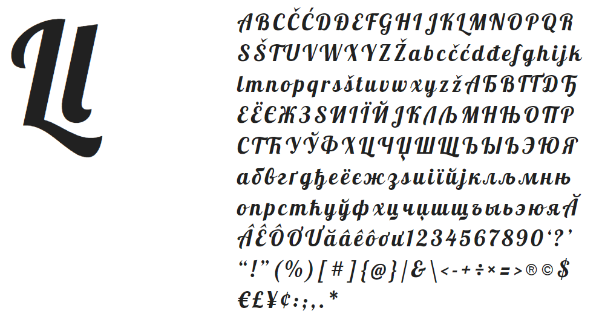

Font for titles is a script font called 'Lobster.' This font is bold and has a hand written quality to it. It is fairly easy to read when used as a title and dramatic is enough to call attention. Most of my headlines will use this font. It will be white or black depending on the circumstance.

Oswald
Font for the body of the page is called 'Oswald.' It is a sans serif font with a slightly thick line weight in order to mirror the line weight that is found in Lobster. It is clear and easy to read and looks good grouped in a paragraph.